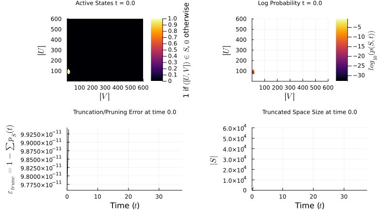
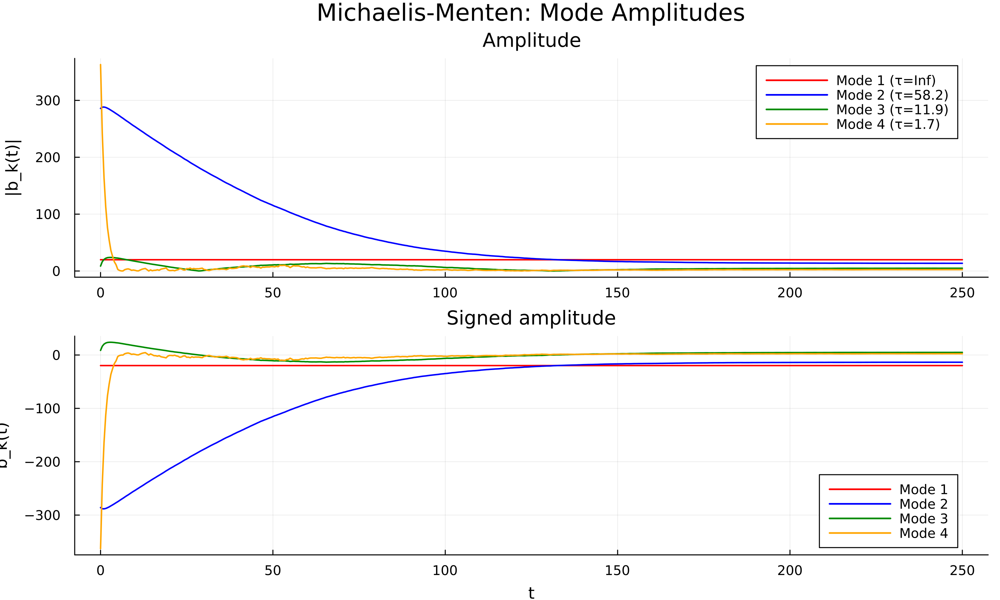
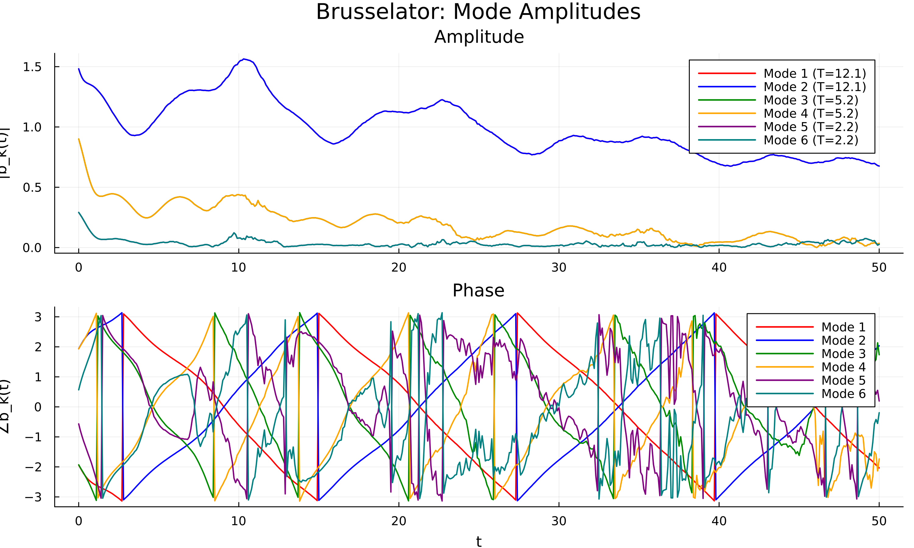

Aditya Dendukuri
PhD Candidate
Department of Computer Science
University of California, Santa Barbara
E-mail: aditya_dendukuri [at] ucsb [dot] edu
About Me
I'm a computational scientist at the intersection of applied mathematics, scientific computing,
and data science. My work focuses on stochastic modeling of discrete systems, rare event
sampling, and efficient algorithms for high-dimensional problems. I enjoy collaborating across
disciplines, blending mathematical analysis with practical computation.
Current Research
Efficient Stochastic Simulation of Discrete Systems
My primary research develops algorithms for simulating stochastic biochemical networks governed by the Chemical Master Equation (CME):
I focus on dynamically controlling the finite state projection (FSP) truncation so the probability mass remains well-resolved over time. Below is a simulation of a genetic toggle switch — two mutually repressing genes — whose reactions are:

The FSP approximation truncates the infinite generator:
Koopman Operator Analysis of Reaction Networks
A second research thread applies Koopman operator theory to stochastic chemical reaction networks. Rather than evolving probability distributions forward (CME direction), the Koopman generator acts on observables \(f: \mathbb{N}^N \to \mathbb{R}\) via:
Using Extended Dynamic Mode Decomposition (EDMD), I recover the Koopman eigenfunctions and eigenvalues directly from SSA trajectory data — without ever forming the full CME generator. The dominant modes capture the slow timescales of the network and enable reconstruction of mean trajectories and rate constants from limited observations.
Results on three benchmark networks (Michaelis-Menten, Lotka-Volterra, Brusselator) show accurate rate recovery and faithful mode decompositions:


Left: Koopman modes and amplitudes for Michaelis-Menten. Right: Brusselator modes — dominant eigenvalues reveal oscillatory timescales. Figures from Koopman Operator Analysis of Stochastic Reaction Networks (in preparation, UCSB / Mezic group).
Numerics — Scientific Computing Library & Simulations
I compiled years of numerical analysis coursework, algorithms, and performance optimizations into numerics — a C++ library covering sparse linear algebra, ODE/PDE solvers, SPH fluid dynamics, quantum circuit simulation, stochastic MCMC, and more. The videos below are rendered directly from the library's simulation apps.